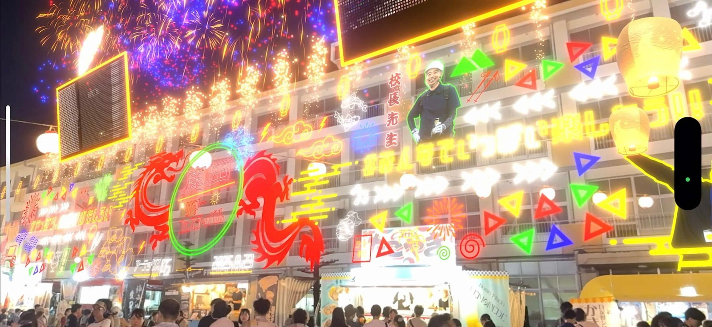
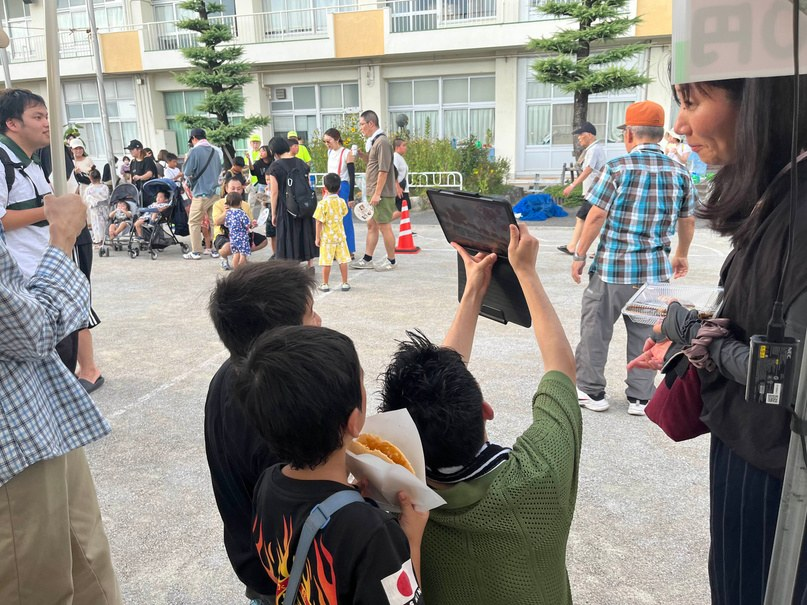
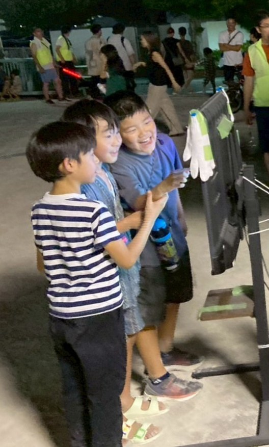

03 — Artechs Works / AR
近未来的なネオン装飾で身近な校舎を彩り、夏の祭りを鮮やかに盛り上げる
Overview
愛知県北名古屋市の小学校で開催された夏祭りにおいて、校舎全体をネオン風のエフェクトで彩るAR空間コンテンツを展示。 地域の子供たちや住民に向け、見慣れた校舎をARで全く異なる空間として体験できるコンテンツを制作した。
装飾に加え、花火やタイのコムローイ祭りを意識したランタンの浮遊演出を取り入れ、 視覚的なインパクトと没入感を高めた設計にしている。 自治体関係者との渉外・調整もプロジェクトマネージャーとして担当した。
Gallery



Media
My Role
Technical Highlight
コルーチンによる非同期処理を採用し、多数のランタンを同時に動作させながらも処理負荷を抑えた。 Mathf.Sin と Mathf.Cos を組み合わせ、風にあおられ不規則に円を描くような滑らかな揺らぎを表現。 各ランタンに初回だけランダムなオフセットを与えることで、全て異なるタイミングで動いているように見せた。 また、オブジェクトを生成・破棄せず再利用することで処理を軽量化した。
// ランタン浮遊コルーチン（抜粋）
private IEnumerator LanturnMover()
{
while (true)
{
// 横方向の揺らぎ（Sinとcosで楕円軌道）
float offsetX = Mathf.Sin(Time.time * horizontalFrequency + randomOffsetX) * horizontalAmplitude;
float offsetZ = Mathf.Cos(Time.time * horizontalFrequency + randomOffsetZ) * horizontalAmplitude;
// 上方向は毎フレーム一定量加算
float newY = transform.position.y + upwardSpeed * Time.deltaTime;
// 上限に達したら下にワープ（生成・破棄せず再利用）
if (newY >= resetHeight)
{
if (isStop) { transform.position = initialPosition; isStop = true; break; }
else { newY = underHeight; } // ← ワープで再利用
}
transform.position = new Vector3(initialPosition.x + offsetX, newY, initialPosition.z + offsetZ);
yield return null;
}
}Tech Stack
Events